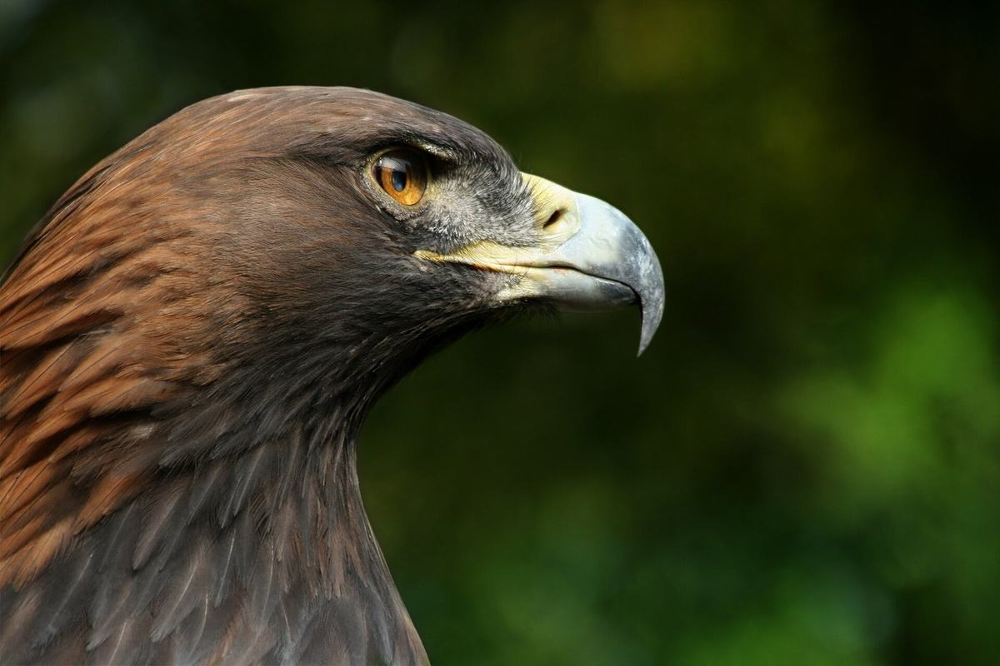
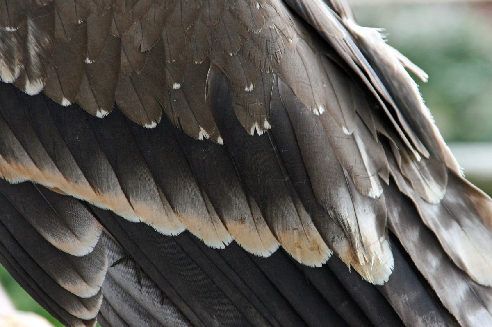
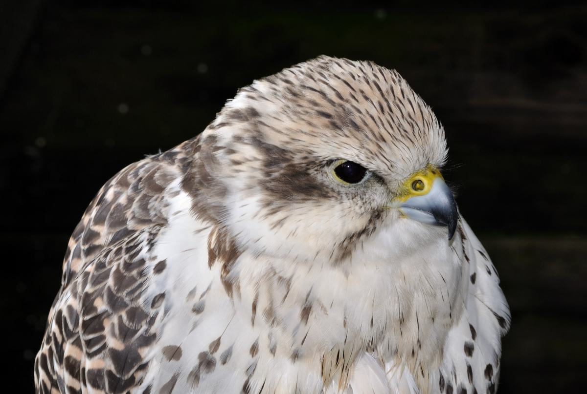
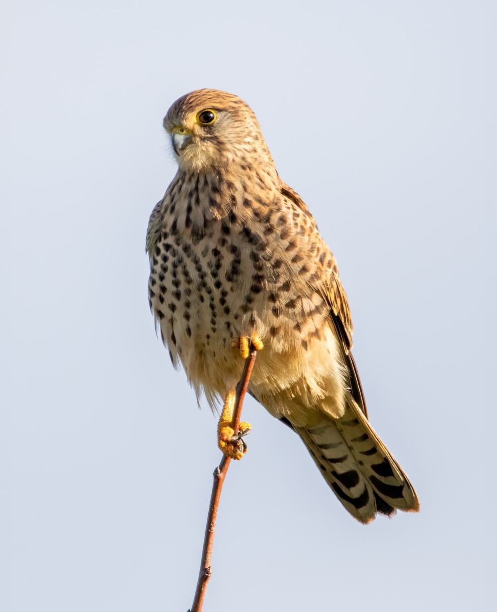

Golden eagle
бүркіт · Aquila chrysaetos
The bird on the flag and on the hunter’s arm. Comes to us after power lines and illegal shooting. Needs the biggest aviary we have.
Home › Birds in care
The patient list
Two of them you can meet on a tour. The other nine are in the hospital block, where nobody sees them except the vet, because a bird that gets used to people cannot be released.
October 2026
We update this table every Monday. “Stage” is where the bird is in the route: the hospital box, the quiet aviary, the forty metre flight corridor, or already waiting for the release day.
| Name | Species | Admitted | Reason | Stage | Status |
|---|---|---|---|---|---|
| Altyn | Imperial eagle | 12 Jun 2026 | Power line, burned primaries | Quiet aviary | In care |
| Zhel | Steppe eagle | 2 Mar 2026 | Starvation, first winter | Flight corridor | Ready |
| Qyz | Saker falcon | 28 Apr 2026 | Confiscated from a car | Flight corridor | In care |
| Boran | Common kestrel | 19 Jul 2026 | Nest lost during roof repair | Flight corridor | Ready |
| Kishkentai | Little owl | 21 Sep 2026 | Car collision, concussion | Hospital box | In care |
| Kok | Black kite | 30 Sep 2026 | Lead poisoning | Hospital box | Critical |
| Tuman | Eagle owl | 2021 | Lost an eye, cannot hunt | Resident aviary | Resident |
| Aqtas | Golden eagle | 2022 | Shot, wing amputated | Resident aviary | Resident |
| Eight of the eleven birds are shown. Three young kestrels from the July nest are kept behind a screen and are not listed, because they must not see a human face before the release. | |||||
Scale
People bring us “a small hawk” and it turns out to be a golden eagle with a two metre wingspan. The bars below are drawn to scale with CSS, so the picture is honest: the longest bar is the biggest bird we treat.
The scale ends at 2.4 metres. For comparison, a tall man with his arms open is about 1.8 metres, the same as the eagle owl.
Test yourself in the wingspan game
Species

бүркіт · Aquila chrysaetos
The bird on the flag and on the hunter’s arm. Comes to us after power lines and illegal shooting. Needs the biggest aviary we have.

дала қыраны · Aquila nipalensis
Endangered and still the most frequent patient. Young birds starve in their first winter and sit on the road eating carrion, where cars hit them.

қарақұс · Aquila heliaca
Nests on the forest edge and hunts over open ground, so almost every bird we get has touched a power pole.

ителгі · Falco cherrug
The most trafficked bird in Central Asia. Ours arrive from the police, usually weak, overweight and unable to fly a hundred metres.

үкі · Bubo bubo
Hunts along roads at night and loses to cars. Owls are the hardest patients: one noisy week and the bird stops eating.

күйкентай · Falco tinnunculus
Nests in village roofs, so most of our chicks are kestrels. They are raised behind a screen and released together in August.
The hard part
A broken wing near the shoulder, a lost eye, a bird that was kept as a pet for a year: these do not go back. For a wild eagle, a life in a cage is not a kindness, so about one bird in five is put to sleep on the first day. We write it in the table and we say it on the tour, because a rescue centre that only shows the good endings teaches nothing.
The nine residents are the exception: they are calm enough to live with people and they work for the rest — every school group that meets Tuman is a village that stops shooting owls.